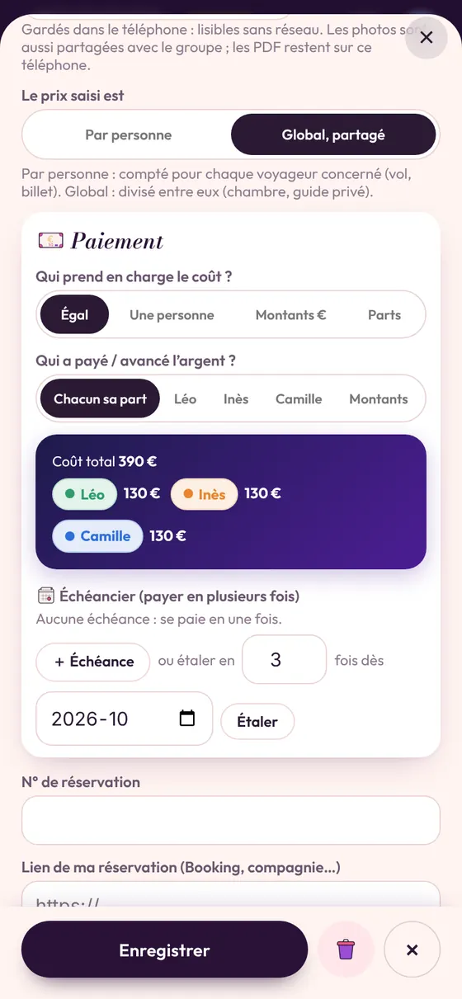
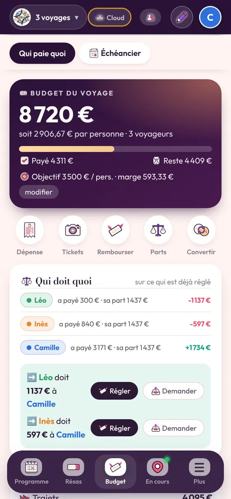

Le budget d’abord
Fixez un budget visé par personne dès le départ, et tenez-vous-y : tout le monde n’a pas les mêmes moyens. L’appli affiche la marge restante.
La personne fêtée ne paie pas
Pour que la future mariée ou le futur marié ne paie rien, partagez chaque dépense entre les autres participants seulement : il suffit de le décocher sur la fiche.

Un programme secret
Préparez le voyage entre organisateurs : la personne fêtée n’est invitée dans le voyage qu’au dernier moment, ou jamais. Les abonnés peuvent suivre les photos, sans voir le programme.
Les activités à réserver
Rangez chaque activité dans une fiche « à réserver » : elle passe au vert une fois payée. Plus de « tu as réservé le karting ? ».
À lire aussi
Types de voyageOrganiser un voyage en groupe, même à vingtVoyager à 10, 15 ou 20 : coordonner les dates, les chambres, les trajets de chacun et les frais. La méthode et…→BudgetPartager les frais quand on n’a pas le même budgetVoyager entre amis aux budgets différents : dépenses communes, dépenses individuelles, parts inégales. Comment…→Types de voyageOrganiser un week-end entre amis, en un éclairOrganiser un week-end entre amis en quelques jours : choisir la date, le logement, le programme et partager le…→